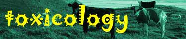
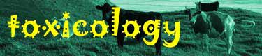
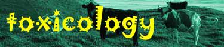

|  |
| Sources Toxicity Kinetics Pathophysiology Clinical Signs Treatment References |
These include atrazine, simazine and propazine. Hexazinone is often applied around pine trees.
They are considered of low toxicity although sheep and cattle apparently have a high sensitivity to them and deaths in both species have occurred after eating sprayed forage.
Atrazine persists in the soil for long periods (9 12 months) because of its insolubility in water.
Unknown.
Clinical signs of toxicity appear about 3 weeks after exposure and include leg weakness, incoordinated gait, anorexia, apathy and depression. Hypersensitivity with posterior paralysis and dyspnoea are also recorded.
The main treatment is to dose the animal(s) repeatedly with activated charcoal. Atrazine is believed to undergo enterohepatic cycling which is the rationale for repeated treatment.
|
|
|